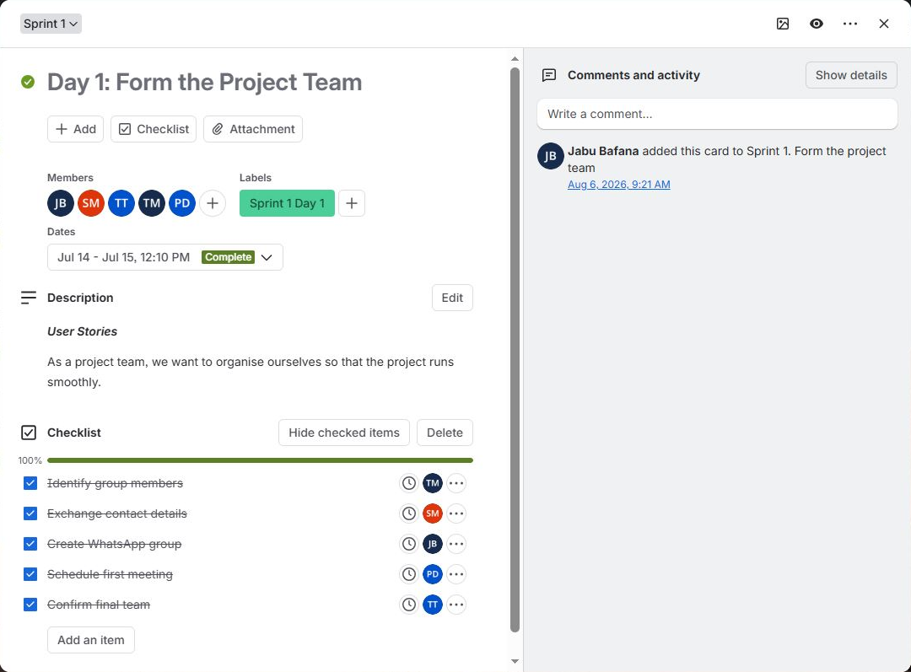
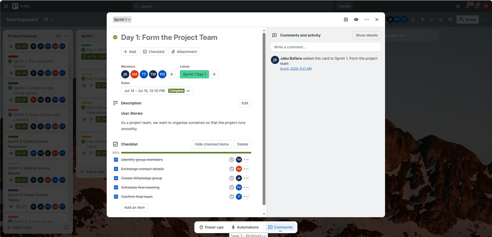

About me
Dedicated and motivated Computer Systems and Network Engineering student with a strong foundation in telecommunications, data communications and network infrastructure. I have hands-on training in routing, switching, subnetting and network security through Cisco Networking Academy. I know Cisco systems and web technologies and can support technical environments and solve real-world IT challenges. I am eager to launch a career in networking or IT infrastructure and to keep developing into a high-performing engineer.
| Institution | Qualification | Year |
|---|---|---|
| DZJ Mtebule High School | National Senior Certificate | 2020 |
| Cape Peninsula University of Technology | HC: Information and Communication Technology | 2023 to 2024 |
| Cisco Networking Academy | CCNA | 2023 to 2026 |
| Cape Peninsula University of Technology | Diploma: ICT in Communication Networks | 2024 to 2026 |
Skills
- Network topology design and simulation (Cisco Packet Tracer)
- Routing and switching configuration, IP addressing and subnetting
- VLAN implementation and inter-VLAN routing
- Network troubleshooting, fault diagnosis, network security and infrastructure reliability
- TCP/IP protocol suite and website development
Languages: English, Xitsonga (home language), Sesotho and Zulu.
Reference: Etienne Ngobeni, +27 67 033 1525.
Projects
- SANREN Cyber Security Challenge (South African National Research Network): applied network security principles and threat analysis in a competitive environment.
- Network Topology Design (Project 2), CPUT: designed and simulated enterprise topologies in Cisco Packet Tracer, configured routing, switching and IP addressing, implemented VLANs, tested inter-VLAN communication, and diagnosed simulated connectivity faults using structured troubleshooting.
- ICT Electives AI, Spike Prime 3.0: explored AI and robotics on the LEGO Spike Prime 3.0 platform, combining programming logic with physical computing.
- Multimedia, Website Development: built web content and applied multimedia design principles to create functional, user-friendly websites.
Mock interview
Evidence
Watch my mock interview video. It covers four question types:
| Type | Question |
|---|---|
| General | Tell me about yourself |
| Behavioural | Tell me about a time you made a mistake. What did you do to correct it? |
| Technical | What do you think is the biggest issue the networking industry faces today? |
| Situational | Staff can't access the internet and a critical server is down. How do you handle it? |
Reflection (STAR)
Situation: As part of my PRP370S module, I had to complete a mock interview to prepare for real-world professional engagement in the ICT industry. I answered four questions covering general, behavioural, technical and situational categories and recorded my responses on video.
Task: I had to prepare thoughtful, structured answers that showed both my technical knowledge and my professional communication, and present myself confidently and authentically, especially for the behavioural and situational questions that called for the STAR framework.
Action: I wrote and rehearsed a script based on my actual experience, including a real mistake from a Cisco Packet Tracer practical where I used an incorrect subnet mask (/25 instead of /24). I practised speaking naturally rather than reading, used the STAR method for my longer answers, and researched current networking trends to give an informed answer on cybersecurity threats.
Result: The process pushed me to reflect on my learning journey in a structured way. I became more confident explaining my technical knowledge out loud, not just in writing. It also showed me gaps I had not noticed, such as needing to slow down and breathe when explaining technical processes. I am now better prepared for real job interviews in networking and IT infrastructure.
Reflections: Markdown and GitHub Pages
Coding in Markdown (STAR)
Situation: Before this module I had never written in Markdown. My formatting experience was limited to word processors and presentation tools, so coding my whole portfolio, including my CV, in Markdown on GitHub felt unfamiliar.
Task: I needed to learn Markdown well enough to produce a polished, professional digital portfolio hosted on GitHub Pages, with headings, tables, badges, collapsible sections, code blocks and links.
Action: I studied GitHub Flavoured Markdown documentation and experimented with tables for my education and skills, badges for contact links, and <details> tags for a collapsible CV. I also learned to use inline HTML inside Markdown, for example align="center".
Result: I built a complete, structured portfolio using Markdown and minimal HTML. I learned that Markdown is more powerful than it first appears and is the standard for README files and developer documentation. I have now taken the portfolio further by writing it as a single HTML page.
GitHub Pages (STAR)
Situation: I had to publish my portfolio on the internet using GitHub Pages. I had heard of GitHub but had never deployed a live website with it.
Task: Configure my repository so my files would display as a live web page that anyone with the link could view without a GitHub account.
Action: I opened my repository's Settings, found the Pages section and set the source to deploy from the main branch. I checked that my links and embedded elements worked and tested the live URL on different devices.
Result: My portfolio is publicly accessible, a real digital presence I can share with employers, lecturers and professional contacts. The experience demystified web deployment and showed me how GitHub Pages gives developers a professional online presence without managing a full hosting environment.
Agile portfolio (PRP370S Project Presentation 3)
Agile Team Charter
Evidence
Tech Empower Team Charter (PDF), signed by all five members
- Purpose: bridge the digital divide in under-resourced Cape Town public high schools (Grade 8 to 12) with mobile hardware, internet and IT training.
- My role: Tester and Presenter. I test the system and present progress to schools.
- Ways of working: Kanban on Trello, a 15-minute daily stand-up, planning every two weeks, and a review and retrospective at the end of each sprint.
- Definition of Done: the card is in the Done column, documentation is attached, and the Product Owner adds a "Final Approval" comment.
- Communication and decisions: WhatsApp for urgent syncs and Trello for tracking, a 4-hour response time in school hours, consensus first, a majority vote on scope changes, and the Team Leader breaks ties.
- Risks and constraints: equipment security, inconsistent school schedules, and a limited budget for mobile data.
Reflection
Situation: Five of us had to work as one team on a project with real deadlines, and we needed agreed rules before starting.
Task: Agree on roles, ceremonies, communication and a Definition of Done that everyone, including me as Tester and Presenter, would follow.
Action: We wrote the charter together and each signed it. I committed to updating my Trello cards in real time and to the Definition of Done before moving anything to Done.
Result: The charter named the problems my logbook later recorded: limited preparation time and difficulty coordinating meeting times. Stand-ups, response times and one owner per card were the right tools, but a charter only helps if the team follows it. Next time I would check our working agreements at every retrospective and raise early when a commitment is slipping.
User Stories and Tasks
Evidence
Trello card "Day 1: Form the Project Team" (Sprint 1, 14 to 15 July, marked Complete).
User story: As a project team, we want to organise ourselves so that the project runs smoothly.
| Task | Owner | Status |
|---|---|---|
| Identify group members | TM | Done |
| Exchange contact details | SM | Done |
| Create WhatsApp group | JB | Done |
| Schedule first meeting | PD (me) | Done |
| Confirm final team | TT | Done |

Later stories on the board were broken down the same way, for example Sprint 3 "Plan Customer Survey", "Create Google Forms Survey", "Share Survey with Learners" and "Collect Survey Responses", then Sprint 4 "Analyse Survey Results" and "Create Survey Tables".
Reflection
Situation: The first sprint began with a story about the team itself, because nothing else could start until we were organised.
Task: Turn that story into small tasks that each had one owner. Mine was to schedule the first meeting.
Action: I set up the first meeting so the team could start working together. The checklist made it clear who owned what, and it gave us a clear measure of when the story was finished.
Result: I learned that a story is only useful once it is broken into tasks someone owns, and that a small task can unblock everyone else. This story was written from the team's point of view, not a user's. For our later stories I would write them from the learner's or school's point of view and add acceptance criteria so the Definition of Done is easier to check.
Product Backlog
Evidence
Tech Empower3 Trello board (Product backlog list)

| Product Backlog | In Progress | Completed |
|---|---|---|
| Research which schools are the most disadvantaged. Define the business idea and its objectives. Decide each member's role for the presentation. Do a practice run on a private Teams meeting. | Finalising presentation content. Updating our report presentation. | Business idea developed. Problem identified. Presentation prepared and delivered. |
Reflection
Situation: Our team had many ideas about the project and needed one place to see what to work on, and in what order.
Task: Keep a prioritised backlog so the most important work came first.
Action: We kept the backlog on Trello, labelled by sprint, so the order showed the dependencies. We could not analyse survey results before collecting them, so collection sat in an earlier sprint. In my taskboard walkthrough I noted that we still needed to add a cost structure and pricing strategy, visuals or a prototype, and more detailed services.
Result: I learned that a backlog is a list ordered by value and dependency, not a to-do list. It also showed me that unfinished items need a clear next step, which our walkthrough questions forced us to write down.
Sprint Backlog
Evidence
The Sprint 1 list on our Trello board, planned as daily cards: "Day 1: Form the Project Team", followed by the Day 2, Day 3 (review requirements) and Day 4 (brainstorm ideas) cards. Each card has a dated checklist that reached 5/5 before the card moved to Done.
Reflection
Situation: Each sprint, we had to choose a small amount of work from the Product Backlog that we could finish.
Task: Plan the sprint so every card had an owner, a date and a checklist.
Action: Sprint 1 was split into daily cards. Because each checklist item had one owner, I always knew what mine was, and I updated my card as the status changed, as our charter requires.
Result: I learned that a sprint backlog works when it is small, visible and updated as we go. My logbook still recorded time pressure, which tells me we sometimes planned more than we could finish. In future sprints I would estimate my own tasks more carefully and say so at the stand-up when I am running behind.
Agile Logbook
Evidence
PRP37XS Agile Logbook, 14 to 17 July 2026 (PDF)
| Date | Completed | Impediments |
|---|---|---|
| 14 July | Prepared the presentation with my group: helped create and organise slides and contributed ideas for the business concept. | Time pressure. Needed better coordination in the group. |
| 15 July | Presented the business idea with my group and explained the SafeStreet concept and its benefits. | Nervousness during the presentation. |
| 16 July | Reflected on the presentation and discussed feedback with group members. | Need better time management. |
| 17 July | Reviewed lessons learned from the Agile process. | Still improving teamwork and coordination. |
Reflection
Situation: I kept a daily stand-up log for the week we prepared and delivered our presentation.
Task: Record what I finished, what came next and what was in my way each day, and then learn from the pattern.
Action: Reading the four entries together, the same blockers repeat: time pressure, coordination and time management. On the day I presented, the blocker became nervousness. The next two days I turned feedback into actions: improve the business idea details and prepare written documentation.
Result: I learned that logging impediments every day is useful because it shows what I need to fix. Planning, communication and time management matter as much as the idea itself. In future I will prepare earlier, communicate more clearly and practise presenting so I am more confident.